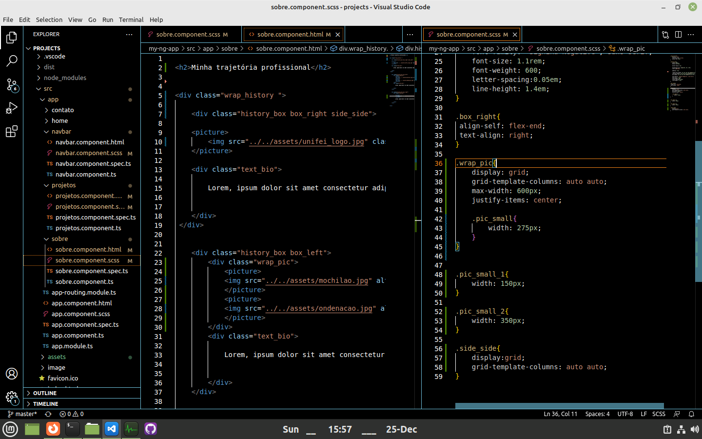

Começo na Programação
Minha jornada em programação começou em 2011 quando entrei no curso de Ciências da Computação
na Universidade Federal de Itajubá. Depois de três períodos nesse curso, transferi para o
curso de Sistemas de Informação, que por ser no período noturno me abriria a oportunidade
de começar um estágio na área.
Em 2012 eu comecei um estágio de período integral como desenvolvedor PHP na empresa Savoir Tecnologia, que durou 15 meses.
Pausa na Carreira
No final de 2013 eu resolvi tirar uma pausa na minha careira. Eventos foram se somando e essa pausa
acabou por durar quase 9 anos. Nesse tempo tive muitas experiências que somaram muito para a minha vida,
como retiros de meditação, viajar de mochilão pelo Brasil e Argentina, e seis anos como Monge Budista
na Tailândia.

Retomada da Carreira
Satisfeito com as experiências que havia tido, resolvi buscar uma vida mais sustentável a longo prazo,
E no final de 2022 deixei a vida monástica e retornei à vida comum. Por mais que nove anos parecessem
muito, não demorou mais do que alguns parágrafos de código para retomar de onde havia parado. Hoje em dia
trabalho para me atualizar nas tecnologias de desenvolvimento web mais recentes e retornar para a área.